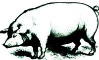
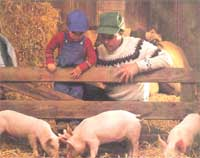
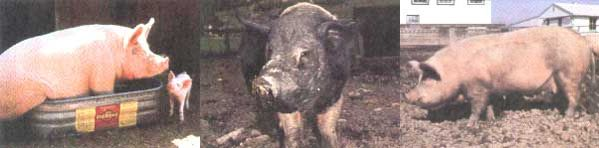

Issue # 137 - April/May 1993
Information you should know before taking little piggy all the way home.
Pigs have long been the victims of a poor image, reputed to be unclean, unfriendly, and overall, uncouth. Let's face it, their name is reserved for the most despicable of people. Happily for pig owners, none of these rumors are true. Given the chance (that is, if they are not confined to a pen the size of a closet), pigs may be the cleanest of all farm animals. They even make great pets (a decidedly negative factor if you're planning on eating them). They will stand by your side for hours emitting love grunts as you scratch them. Pigs are truly the sweethearts of the barnyard.
However, for those interested in home-consumption, you should know they are one of the best converters of feed to meat, and can make use of pasturing, table scraps, and garden surpluses to reduce feed costs. In only five or six months, they will provide an average of 150 pounds of pork products. Pigs also require relatively little space and care.
With pigs, there is no one outstanding breed. Your choice will be based on personal preference and what is available in your location. Rather than trying to choose any one breed, concentrate on finding outstanding specimens within a given breed. While certain breeds may have their own advantages and disadvantages, any well-bred pig is suitable for raising and consumption.
There are two basic groups that you can use to categorize pigs: lean- or meat-type and fat-type. Years ago, when such "fatty" by-products as salt pork and lard were higher in demand, the "lard" pig was more common. In recent years, however, pigs have been selectively bred to lose excess fat due to the public's increasing demand for low-fat foods. Therefore most pigs are now the leaner meat-type. Meat-type pigs are long and trim with hams and shoulders that are wider than their backs. These pigs will dress out with a lower percentage of fat and are more expensive to raise, because more food goes into the production of meat than fat. Don't worry-they'll still provide plenty of salt pork and lard for the average family. Here are the common breeds of swine:
American Landrace: This swine is the American version of the Danish hog that has made the Danes famous for their fine hams and bacon. They are white or pink with floppy ears and a long, lean body.
Berkshire: This medium-size hog is very solid and has little excess fat. It is black with white on its feet and often has a bit of white on its face. Berkshires have broad faces that are slightly dished out and have medium-length snouts. While this gives them a slightly pug head, those that are extremely pug-headed should be avoided.
Chester White: A large, white hog with a medium snout and floppy ears.
Duroc: A lean, hardy hog with large, floppy ears. It is red without a trace of any other color. However, the red may range from deep rust to almost tan. The Duroc tends to have relatively large litters.
Hampshire: This hog is quite popular in the Northeast and quite easy to care of; it is a good pig for beginners. It is black with erect ears and a white band around the front of the body and fore-legs and, sometimes, white on the rear feet. It is a good hog for southern climates because its darker coloration makes it less susceptible to sunburn.
Poland-China: This hog is black with white feet and splashes of white on the face as well as on the tip of the tail. It is also particularly suited to warmer climates because of its darker color.
Spot: It resembles the Poland-China in body type but has more white coloring. It tends to look more like a black hog with numerous white spots.
Tamworth: One of the oldest breeds of hog, the Tamworth, like the Duroc, is red, varying from light to dark, but with erect ears and a rather long, thin snout.
Yorkshire: This is a very popular breed and easy to keep. Yorkshires are pink or white, sometimes with black spots, and have erect ears. This is the best breed, in my opinion, if you plan to go into breeding, because they have large litters and are good mothers.
It is unlikely you will be offered the chance to buy a purebred pig. They will cost a good deal more, and unless you're planning to go into breeding, you'll be wasting your money. I have had personal experience with Hamshire-Yorkshire crosses and Yorkshire-Duroc crosses and have found them quite acceptable. In fact, pigs, like lambs, often benefit from crossbreeding by having increased vigor and growth capability (heterosis).
In selecting a pig, you may want to check out the popular Yorkshire (left), the dark Poland-China (middle), or the floppy-eared Chester White (right).
Pigs are usually farrowed in the spring and early fall. To start, I suggest buying a spring shoat (weaned piglet); it can be raised over the summer and butchered in the fall, so there will be no need for winter housing. Furthermore, more table scraps and garden surplus are available in the summer. Shoats are more expensive in the spring, but it's worth the extra money to be able to raise them in the summer. It's also best to raise more than one pig at a time. If your family wants only one, see if a friend will buy another and raise it with yours. Most animals do better with companionship, and if you watch two pigs, you will notice that they never eat alone. If one gets up to eat, the other will not be far behind. In a way, they will compete for food, eat more, and tend to gain faster.
You should be able to find plenty of ads in local papers and market bulletins that offer young pigs for sale. Probably the best source of information is by word of mouth. A neighbor who has had a good experience raising pigs from a nearby breeder can often tell you where to buy feeder pigs. These are the youngsters who have been recently weaned and are now offered for sale to anyone interested in raising one to market weight.
For those who fancy themselves as shrewd judges of piglets, your local auction ring will usually provide a steady supply of feeders, but be prepared. Tracing the background on these animals is usually next to impossible. Nearby breeders often dump their excess animals here so they don't have to go through the expense of feeding them. Buying pigs in this way puts the burden strictly on you, and you have no recourse if they don't turn out as
expected. Better to buy from a reputable dealer, who can answer questions regarding vaccinations, wormings, etc.
Look for qualities embodied in a good meat-type hog, such as a long, lean body with
large hips and shoulders.
Many breeders who sell feeders are selling a specific breed but probably not a purebred or specific cross-breed. In most regions of the country, the days of rather indiscriminate back-lot breeders are gone. The pig business on the commercial level has become very specific. Crosses are developed so that current consumer demands can be met. Today's consumer is, or should be, a cost-conscious individual. Pigs properly bred and fed can deliver to the dinner table a product almost as free of fat as chicken. In fact, the national Swine Producers Association has been promoting its product as "the other white meat" and has done a good job of insuring that its members retain their share of the national meat market.
When it comes to choosing your pig, choose the largest and most active in the litter. The belief that a pig with a curly tail is better than one with a straight tail is, in my opinion, a complete fallacy. Look for qualities embodied in a good meat-type hog, such as a long, lean body with large hips and shoulders.
Arrange to buy your pig early in the season and pick it up early. You may even want to try going in a day earlier than suggested; the seller will usually sell it to you then, and you'll get the pick of the litter. Any pig that appears listless, sickly, coughs, or shows other signs of disease should be refused. This is also true of malformed pigs or those that are humped up or whose vertebrae you can feel. A lump or bulge near the hindquarters often indicates a hernia, and although hernias sometimes regress on their own, choose another piglet just in case. If you buy a barrow (a male hog that is castrated before sexual maturity) that has recently been castrated, make sure there is no inflammation or sign of infection around the incision. If buying from a stranger, be wary of any piglet that looks different from the rest. People have been known to pass a runt on from litter to litter. That alien-looking piglet may be a year-old midget.
If you know the breeder, try to observe the pigs a few weeks before you buy so that you can choose a pig the way a breeder might choose one for himself. When I want to keep a pig from one of our litters, I not only look for one with the favorable qualities listed above, but I also try to select one that is especially alert, aggressive, and competitive for food. As with all animals, you should take your time when buying. Don't be rushed, and do insist on choosing your own pig. You can catch a piglet by quietly stalking or cornering it and then quickly and decisively grabbing a back leg to reel it in. Ignore the shrieks and squeals-they are just talk.
Transport your little piglet to its new home in a small wooden box with food inside. Most pigs travel quite well (and do almost anything else well for that matter) if well-fed. If you have access to a dog travel box, this will be satisfactory, or you can build a simple substitute. If nothing else, they can be transported for short distances in a burlap sack. Do not make the mistake of thinking you can hold your cute little piglet in your lap on the way home. It will be one long trip that may just sour you on pigs forever.
Pigs are weaned at about four weeks of age and sold at six to eight weeks of age. They should weigh between 20 to 30 pounds at six weeks of age and 30 to 40 pounds at eight weeks. Obviously, lighter pigs may be runts or less than six weeks of age and should be avoided. Check the going price for pigs in your area, because it is not beneath some people to sell them to you for far above the going rate if they think you'll pay it. If you can't determine the going rate, a general formula for the price of shoats is 1.5 times the weight of shoat times the average price of dressed pork. Piglets at six weeks of age have already been weaned from their mother and are eating dry food on their own. Iron shots, which help prevent anemia, should have been administered to the piglets at birth.
Clipping the Teeth
The needle teeth of the baby pig should be clipped soon after they erupt to avoid potential injury to the sow's teats. Be sure this has been done before you buy a piglet. Piglets are very aggressive feeders and have no idea how rough they are while nursing. If this rough nursing takes place with sharp little teeth grasping it, the teat may become covered with minor scratches, which, in turn, may make the sow apprehensive about nursing. The teeth should be cut close to the gum line with a pair of electrician's wire cutters. There are no advantages, such as speed of growth or meat quality, in raising either a male or female pig, although some believe that males eat a lot more and consequently gain more.
Castration
All male pigs destined for the table should be castrated at about six weeks of age. A male that is allowed to grow to maturity without being castrated will have meat that has a strong odor and objectionable flavor. Once you have sniffed it, you will never again doubt its origin. You can tell a young barrow by one or two scars found near the hindquarters and caused by the castration. If the scar is well healed, it may be necessary to feel around the scrotum to be sure no testicles are present. To determine the sex of the shoat, check the hindquarters. The female (gilt) has a small flap and the male does not. In the male, the sheath which houses the penis is quite apparent on his belly.
Pasturings
If given good pasture, a pig will graze just like a horse or sheep and may get up to half its food supply this way. Using reinforcement rod posts, I made large portable pasturing pens. Providing shade in your pasture is a must. Either a large stand of trees or a simple lean-to or A-frame hut should be adequate. If a small stream of water is available to the pig, watering and cooling during hot weather will be simple. If not, you might have to spray your pig or sprinkle it with water during extremely hot days.
Dirt-Floored Pens
If you have a limited amount of land, hogs will do well in a smaller pen, but this will not offer you the feed economy of pasturing. Each pig should have at least 100 square feet, but allow 250 or more if possible. While this doesn't afford the extra food that pasturing does, the pigs will still be able to root the ground, augmenting their diet a bit, and providing themselves with much needed iron and other valuable minerals and nutrients from the soil. In a small pen the ground will be rooted bare within a short time. Toss in some fresh sod or some fresh grass clippings each day. Again, shade must be provided.
Wood or Concrete-Floored Pens
Pour a concrete slab or lay a floor of two-inch boards that are set a foot off the ground before fencing in order to have a nearly maintenance-free and escape-proof pen. A quick spray with a hose every few days will leave your pen looking (and smelling) like new. This may seem to be the lazy person's pen-but don't use this system unless you wish to invest a little extra time each day in digging sod and cutting grass. If you plan to simply offer your pig commercial feed and some kitchen scraps each day in a pen like this, I'm afraid you'll get pork not a whole lot different from what you can buy-both in taste and price.
Young pigs are particularly susceptible to roundworm (ascarids) infestations. These are worms of considerable size, and during part of their life cycles, they migrate through both the liver and the lungs. While in the lungs, these worms cause a condition called "thumps," in which the piglets show an exaggerated abdominal type of breathing. Pigs so affected with this disease often end up as runts. Several other types of worms can infest pigs as well. Some types live in the stomach and are, quite logically, called stomach worms. In addition to roundworms, there are other worms that live in the intestinal tract. Most are effectively controlled by a combination of worming on a regular schedule and good sanitation. A simple effective worming program should look something like this:
•Treat sows and gilts five to seven days before farrowing and again at mid-lactation (two to three weeks).
•Treat weaners before placing them on their fattening ration and then again eight weeks later.
•Treat fatteners at about 100 pounds.
•Treat boars at six-month intervals.
One disease that I would strongly suggest vaccinating against is swine erysipelas, or diamond skin disease. The organism that causes this disease is everywhere in the soil, but the disease can easily be prevented with a good vaccination program. The infection always seems to strike pigs just when they reach butchering weight. Although pigs with the disease usually respond well to antibiotic treatment, butchering must be delayed in order to allow the antibiotics to clear away from the meat. This precaution, of course, means extra expense for feed, medication, and perhaps labor.
Well, hopefully this article will at least get you thinking about buying a pig. And once you do, you will quickly see that they are a breeze to raise and in just five or six months you will have just about the best pork you've ever tasted-unless of course you find yourself attached to this amiable animals. In which case you've found yourself the perfect pet.
Editor's Note: Steven Thomas has been a diversified farmer in Vermont and has written for numerous periodicals. George Looby has degrees in agriculture and veterinary medicine, and is with the Tufts University School of Veterinary Medicine. For more information on buying pigs and other livestock, see Backyard Livestock: Raising Good Natural Food for your Family , from which this article was adapted. It is available postpaid for $17.45 from The Countryman Press, P.O. Box 175, Woodstock, VT 05091; 800/245-4151.
|
 LARRY LEFEVER/GRANT HEILMAN PHOTOGRAPHY, INC. In selecting a pig, you may want to check out the popular Yorkshire (left), the dark Poland-China (middle), or the floppy-eared Chester White (right). |
 PHOTORESEARCHERS INC. |
 |